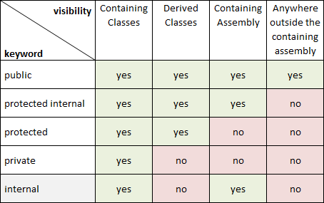
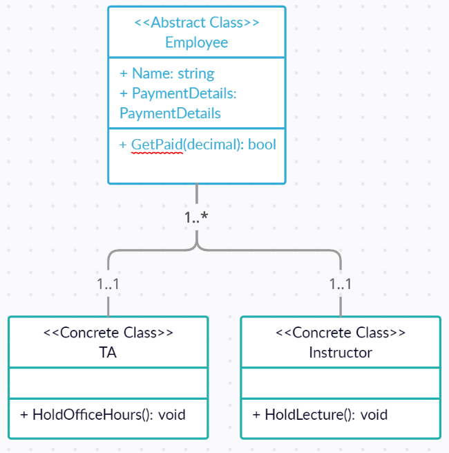

## Inheritance </br> #### Key topics for tonight <div style="text-align: left;"> - What is Inheritance? </br> - Revisiting Access Modifiers </br> - Thinking in Abstractions </br> </div> --- ## Inheritance #### Definition - Inheritance in C# enables you to create new classes that reuse, extend, and modify the behavior defined in other classes. --- ## Inheritance #### Example ```c# public class Person { public string FirstName { get; set; } public string LastName { get; set; } public bool IsAlive { get; set; } public DateTime Birthday { get; set; } } public class Employee : Person { public decimal Salary { get; set; } public string JobTitle { get; set; } public int NumberOfDaysEmployed { get; set; } } ``` --- ## Inheritance #### Big ideas - Framing our class definitions this way allows us to <span style="color: cadetblue;">generalize</span> the behaviors of our classes. - We can begin to group together values and functionality based on one shared level of a concept. - Properly using inheritance is a key tool in preventing <span style="color: cadetblue;">code duplication</span>. --- ## Inheritance #### Where have we seen it before? ```c# public class Square { public double Length { get; set; } private int _numberOfSides; public Square(double length) { Length = length; _numberOfSides = 4; } private double CalculateArea() { return Length * Length; } private double CalculateCircumference() { return Length * _numberOfSides; } public void DisplayStats() { Console.WriteLine("Here are some stats on your square!\n" + $"Length: {Length} units\n" + $"Area: {CalculateArea()} units squared\n" + $"Circumference: {CalculateCircumference()} units in length" ); } public override string ToString() { return "Here are some stats on your square!\n" + $"Length: {Length} units\n" + $"Area: {CalculateArea()} units squared\n" + $"Circumference: {CalculateCircumference()} units in length"; } } ``` --- ## Inheritance #### Big ideas (cont) - All classes <span style="color: cadetblue;">extend</span> from the Object class implicitly. - Which of these statements is more accurate? - Square `is a` Rectangle. - Rectangle `is a` Square. <div class="fragment" style="text-align: left;"> Inheritance between classes doesn't always overlap with how we group ideas in real life. It's important to construct our code thinking first of how we track theses classes via properties / functionality. </div> --- ## Inheritance #### Vocab - <span style="color: cadetblue;">Child / Derived / Concrete class</span> - A class that implements another class. - <span style="color: cadetblue;">Parent / Abstract / Base class</span> - A class that is implemented by another class. - <span style="color: cadetblue;">Inherit / Implement / Extends</span> - The process of taking Parent class and making a new class with additive characteristics. --- ## Inheritance - Access Modifiers  --- ## Inheritance - Access Modifiers (cont) - <span style="color: cadetblue;">protected</span> - The type or member can be accessed only by code in the same class, or in a class that is derived from that class. --- ## Inheritance - Access Modifiers (cont) #### Code Example <div class="fragment" style="color: cadetblue"> demo </div> --- ## Inheritance #### Big ideas (cont) - Proper Inheritance is about taking the most <span style="color: cadetblue;">abstract</span> definition of a concept, and representing that as a class to be <span style="color: cadetblue;">implemented</span>. --- ## Abstract classes #### What is special about abstract classes? - Abstract classes are exactly the same as regular classes, except abstract classes can't be made into objects directly. - Abstract classes allow for developers to identify shared functionality between other classes, while preventing for that abstract concept itself to be created. --- ## Abstract classes #### UML Diagram (Unified Modeling Language)  <div class="fragment" style="color: cadetblue"> <a href="https://khalilstemmler.com/files/resources/umlcheatsheet.jpg">UML cheat sheet</a> </div> --- ## Abstract classes #### Code example ```c# public abstract class Employee { public string Name { get; set; } public PaymentDetails PaymentDetails { get; set; } public bool GetPaid(decimal payment) { PaymentDetails.DepositeMoney(payment); } } public class TA : Employee { public void HoldOfficeHours() { // ... a bunch of logic the involves holding office hours. } } public class Instructor : Employee { public void HoldLecture() { // ... a bunch of logic the involves hosting a lecture. } } public class PaymentDetails { public string Bank { get; set; } public string AccountNumber { get; set; } public bool DepositeMoney(decimal money) { // ... send that money somewhere return true; } } ``` --- ## Abstract Methods #### Definition An Abstract Method is a method within an abstract class which has no implementation, but must be implemented by a child class. <div class="fragment" style="color: cadetblue"> This is useful for when you know that all children of a class must implement something, but they are expected to implement it differently. </div> --- ## Abstract Methods (cont) #### Code Example ```c# public abstract class Shape { public Color Color { get; set; } public abstract double GetArea(); public abstract double GetPerimeter(); } public class Square : Shape { public double Length { get; set; } public override double GetArea() { return Length * Length; } public override double GetPerimeter() { return Length * 4; } } public class RightTriangle : Shape { public double SideA { get; set; } public double SideB { get; set; } public double SideC => Math.Sqrt(Math.Pow(SideA, 2) + Math.Pow(SideB, 2)); public override double GetArea() { return (SideA * SideB) / 2; } public override double GetPerimeter() { return SideA + SideB + SideC; } } ``` --- ## Exercises [Link](https://education.launchcode.org/csharp-web-development/chapters/inheritance/exercises.html) --- ## Questions --- # Studio [Link](https://education.launchcode.org/csharp-web-development/chapters/inheritance/studio.html)